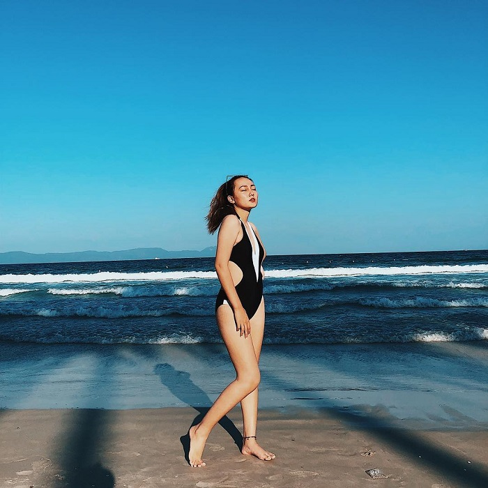

Dốc Lết là một trong những điểm đến hấp dẫn của thành phố biển, sở hữu đường bờ biển dài, bãi cát trắng mịn và làn nước trong xanh. Cùng dạo quanh một vòng Dốc Lết Nha Trang với mình nhé!
Dốc Lết cách Nha Trang bao nhiêu km? Dốc Lết Nha Trang hay Dốc Lếch nằm ở địa phận phường Ninh Hải, thị xã Ninh Hòa, Khánh Hòa,
cách trung tâm thành phố Nha Trang khoảng 49km về phía Nam. Bờ biển Dốc Lết nổi bật với bãi cát trắng, trải dài và hàng dương xanh rì
ngăn cách đất liền với biển cả.
Du khách có thể lựa chọn phương tiện di chuyển đến Dốc Lết Nha Trang thành phố Nha Trang bằng máy bay hoặc tàu hỏa.
Du khách đặt vé máy bay đáp xuống sân bay Cam Ranh, sau đó thuê xe taxi hoặc xe máy đi Dốc Lết.
Bên cạnh đó, nếu du khách muốn đi tàu hỏa thì hiện nay cũng các các trạm di chuyển từ Hà Nội, Đà Nẵng và Sài Gòn tới Nha Trang.
Du khách có thể mua vé ghế cứng hoặc vé giường nằm với mức giá giao động trong khoảng 250.000VNĐ - 400.000VNĐ/lượt.

Dốc Lết là một bãi biển hoang sơ mang vẻ đẹp tinh khôi với nước biển xanh như ngọc, bờ cát trắng mịn và không gian yên tĩnh vì được những ngọn đồi xung quanh bao bọc.
Đặc biệt, ở đây có bãi tắm cạn, nơi có mực nước rất nông nên phù hợp để trẻ em vui chơi tắm biển mà không sợ đuối nước.
Nếu đã có cơ hội đến Dốc Lết một ngày đầy nắng, thì đừng quên sạc pin điện thoại thật đầy và sống ảo mọi lúc mọi nơi nhé!
Thuê thuyền đi khám phá biển Dốc Lết Nha Trang là một hoạt động rất được các bạn trẻ ưa chuộng.
Chỉ cần thuê một chiếc thuyền độc mộc nho nhỏ của ngư dân trên đảo, sau đó tự mình chèo đi và tự mình tìm kiếm những điều mới lạ.
Chi phí thuê thuyền cũng khá rẻ, chỉ khoảng vài chục nghìn mà thôi. Tuy nhiên, đây cũng là một hoạt động tương đối mạo hiểm.
Nếu bạn muốn thử thì nên nhờ người dân hướng dẫn trước và mặc áo phao đầy đủ để đảm bảo an toàn.
Bãi biển Dốc Lết có khu vực cho phép du khách cắm trại. Do đó, bạn có thể chuẩn bị lều trại hoặc thuê tại chỗ, mang theo đồ ăn,
thức uống, sẵn sàng củi lửa để cắm trại buổi đêm và đắm mình trong tiếng nhạc du dương bên bếp lửa bập bùng cùng bạn bè.
Bên cạnh Dốc Lết có làng chài Ninh Thủy nằm ở cách đó không xa và là một địa điểm du lịch khá nổi tiếng của Nha Trang.
Người dân làng chài rất thân thiện và gần gũi. Tại đây, du khách sẽ bắt gặp chiếc cổng làng nhỏ xinh được sơn vôi hồng, mộc mạc nhưng rất đặc biệt.
Một trải nghiệm thú vị khi đến làng chài Ninh Thủy là tham gia vào hoạt động hàng ngày của ngư dân làng chài.
Với hoạt động này, du khách sẽ hiểu hơn về cuộc sống của người dân nơi biển đảo hoang sơ.
Từ bãi biển Dốc Lết Nha Trang, du khách đi bộ theo hướng Bắc là đến khu vực Hòn Khói. Đến đây, du khách sẽ được tận mắt chứng kiến
quá trình làm muối của người dân địa phương. Đồng thời, Hòn Khói cũng là địa điểm check in quen thuộc vô cùng độc đáo của giới trẻ trong khu vực.